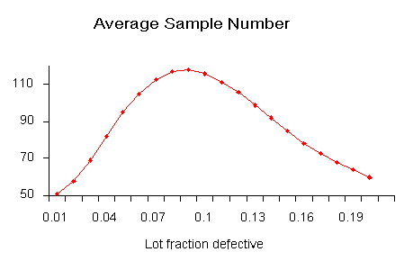

|
6.
Process or Product Monitoring and Control
6.2. Test Product for Acceptability: Lot Acceptance Sampling
|
||||||||||||||||||||||||||||||||||||||||||||||||||||||||||||||||||||||||||||||||||||||||||||||||||||||||||||||||||||||||||||||||||||||||||||||||||||||||||||||||||||||||||||||||||||||||||||||||||||||||||||||
| Double Sampling Plans | ||||||||||||||||||||||||||||||||||||||||||||||||||||||||||||||||||||||||||||||||||||||||||||||||||||||||||||||||||||||||||||||||||||||||||||||||||||||||||||||||||||||||||||||||||||||||||||||||||||||||||||||
| How double sampling plans work |
Double and multiple sampling plans were invented to give a
questionable lot another chance. For example, if in double sampling
the results of the first sample are not conclusive with regard to
accepting or rejecting, a second sample is taken. Application of
double sampling requires that a first sample of size \(n_1\)
is taken at random from the (large) lot. The
number of defectives is then counted and compared to the first
sample's acceptance number \(a_1\)
and rejection number \(r_1\).
Denote the number of defectives in sample 1 by \(d_1\)
and in sample 2 by \(d_2\),
then:
If \(d_1 \ge r_1\), the lot is rejected. If \(a_1 < d_1 < r_1\), a second sample is taken.
If \(D_2 \ge r_2\), the lot is rejected. |
|||||||||||||||||||||||||||||||||||||||||||||||||||||||||||||||||||||||||||||||||||||||||||||||||||||||||||||||||||||||||||||||||||||||||||||||||||||||||||||||||||||||||||||||||||||||||||||||||||||||||||||
| Design of a Double Sampling Plan | ||||||||||||||||||||||||||||||||||||||||||||||||||||||||||||||||||||||||||||||||||||||||||||||||||||||||||||||||||||||||||||||||||||||||||||||||||||||||||||||||||||||||||||||||||||||||||||||||||||||||||||||
| Design of a double sampling plan |
The parameters required to construct the OC curve are similar to the
single sample case. The two points of interest are
(\(p_1, \, 1-\alpha\))
and (\(p_2, \, \beta\)),
where \(p_1\)
is the lot fraction defective for plan 1 and \(p_2\)
is the lot fraction defective for plan 2.
As far as the respective sample sizes are concerned, the second
sample size must be equal to, or an even multiple of, the first
sample size.
There exist a variety of tables that assist the user in constructing double and multiple sampling plans. The index to these tables is the \(p_2 / p_1\) ratio, where \(p_2 > p_1\). One set of tables, taken from the Army Chemical Corps Engineering Agency for \(\alpha = 0.05\) and \(\beta = 0.10\), is given below:
|
|||||||||||||||||||||||||||||||||||||||||||||||||||||||||||||||||||||||||||||||||||||||||||||||||||||||||||||||||||||||||||||||||||||||||||||||||||||||||||||||||||||||||||||||||||||||||||||||||||||||||||||
| Example | ||||||||||||||||||||||||||||||||||||||||||||||||||||||||||||||||||||||||||||||||||||||||||||||||||||||||||||||||||||||||||||||||||||||||||||||||||||||||||||||||||||||||||||||||||||||||||||||||||||||||||||||
| Example of a double sampling plan |
We wish to construct a double sampling plan according to
The left holds \(\alpha\) constant at 0.05 (\(P = 0.95 = 1-\alpha\)) and the right holds \(\beta\) constant at 0.10 (\(P = 0.10\)). Then holding \(\alpha\) constant, we find \(pn_1 = 1.16\), so \(n_1 = 1.16 / p_1 = 116\). And, holding \(\beta\) constant, we find \(pn_1 = 5.39\), so \(n_1 = 5.39 / p_2 = 108\). Thus the desired sampling plan is
The first plan needs less samples if the number of defectives in sample 1 is greater than 2, while the second plan needs less samples if the number of defectives in sample 1 is less than 2. |
|||||||||||||||||||||||||||||||||||||||||||||||||||||||||||||||||||||||||||||||||||||||||||||||||||||||||||||||||||||||||||||||||||||||||||||||||||||||||||||||||||||||||||||||||||||||||||||||||||||||||||||
| ASN Curve for a Double Sampling Plan | ||||||||||||||||||||||||||||||||||||||||||||||||||||||||||||||||||||||||||||||||||||||||||||||||||||||||||||||||||||||||||||||||||||||||||||||||||||||||||||||||||||||||||||||||||||||||||||||||||||||||||||||
| Construction of the ASN curve |
Since when using a double sampling plan the sample size depends on
whether or not a second sample is required, an important
consideration for this kind of sampling is the Average Sample Number
(ASN)
curve. This curve plots the ASN
versus \(p'\),
the true fraction defective in an incoming lot.
We will illustrate how to calculate the ASN curve with an example. Consider a double-sampling plan \(n_1 = 50\), \(c_1 = 2\), \(n_2 = 100\), \(c_2 = 6\), where \(n_1\) is the sample size for plan 1, with accept number \(c_1\), and \(n_2, \, c_2\) are the sample size and accept number, respectively, for plan 2. Let \(p' = 0.06\). Then the probability of acceptance on the first sample, which is the chance of getting two or less defectives, is 0.416 (using binomial tables). The probability of rejection on the second sample, which is the chance of getting more than six defectives, is (1-0.971) = 0.029. The probability of making a decision on the first sample is 0.445, equal to the sum of 0.416 and 0.029. With complete inspection of the second sample, the average size sample is equal to the size of the first sample times the probability that there will be only one sample plus the size of the combined samples times the probability that a second sample will be necessary. For the sampling plan under consideration, the ASN with complete inspection of the second sample for a \(p' = 0.06\) is $$ 50(0.445) + 150(0.555) = 106 \, . $$ The general formula for an average sample number curve of a double-sampling plan with complete inspection of the second sample is $$ \mbox{ASN} = n_1 P_1 + (n_1 + n_2)(1-P_1) = n_1 + n_2(1-P_1) \, . $$ where \(P_1\) is the probability of a decision on the first sample. The graph below shows a plot of the ASN versus \(p'\). |
|||||||||||||||||||||||||||||||||||||||||||||||||||||||||||||||||||||||||||||||||||||||||||||||||||||||||||||||||||||||||||||||||||||||||||||||||||||||||||||||||||||||||||||||||||||||||||||||||||||||||||||
| The ASN curve for a double sampling plan |  | |||||||||||||||||||||||||||||||||||||||||||||||||||||||||||||||||||||||||||||||||||||||||||||||||||||||||||||||||||||||||||||||||||||||||||||||||||||||||||||||||||||||||||||||||||||||||||||||||||||||||||||